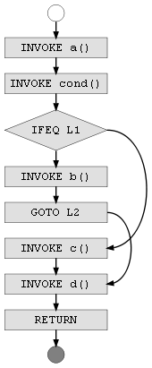

Control Flow Analysis for Java Methods
DRAFT - This document does not reflect the current JaCoCo implementation.
Implementing a coverage tool that supports statement (C0) as well as branch coverage coverage (C1) requires detailed analysis of the internal control flow of Java methods. Due to the architecture of JaCoCo this analysis happens on compiled class files (bytecode). This document defines graph structures for control flow analysis of Java bytecode and discusses strategies for probe insertion. Marc R. Hoffmann, November 2010
Control Flow Graphs for Java Bytecode
As an starting point we take the following example method that contains a single branching point:
1public static void example() { 2 a(); 3 if (cond()) { 4 b(); 5 } else { 6 c(); 7 } 8 d(); 9}
A Java compiler will create the following bytecode from this example method.
Java bytecode is a linear sequence of instructions. Control flow is
implemented with jump instructions like the conditional
IFEQ or the unconditional GOTO opcode. The jump
targets are technically relative offsets to the target instruction. For better
readability we use symbolic labels (L1, L2) instead
(also the ASM API uses such symbolic labels):
public static example()V INVOKESTATIC a()V INVOKESTATIC cond()Z IFEQ L1 INVOKESTATIC b()V GOTO L2 L1: INVOKESTATIC c()V L2: INVOKESTATIC d()V RETURN
The possible control flow in the bytecode above can be represented by a graph. The nodes are byte code instruction, the edged of the graph represent the possible control flow between the instructions:
Flow Edges
The control flow graph of a Java method defined by Java byte code may have the following Edges. Each edge connects a source instruction with a target instruction. In some cases the source instruction or the target instruction does not exist (virtual edges for method entry and exit) or cannot be exactly specified (exception handlers).
| Type | Source | Target | Remarks |
| ENTRY | - | First instruction in method | |
| SEQUENCE | Instruction, except GOTO, xRETURN,
THROW, TABLESWITCH and LOOKUPSWITCH |
Subsequent instruction | |
| JUMP | GOTO, IFx, TABLESWITCH or
LOOKUPSWITCH instruction |
Target instruction | TABLESWITCH and LOOKUPSWITCH will define
multiple edges. |
| EXHANDLER | Any instruction in handler scope | Target instruction | |
| EXIT | xRETURN or THROW instruction |
- | |
| EXEXIT | Any instruction | - | Unhandled exception. |
Probe Insertion Strategy
- Probes are additional instructions that can be inserted between existing instructions. Probes record the fact that they have been executed. One can think probes are placed on edges of the control flow graph. Therefore if a probe has been executed we know that the corresponding edge has been visited.
- If a edge has been visited, we know that the source node of the this edge has been executed.
- If a node has been executed and the node is the target of only one edge we know that this edge has been visited.
With this observations we only need probes at the following edges:
- At every EXIT.
- At every edge where the target instruction is the target of more than one edge.
The execution status of all other edges and instructions can be derived from the status of this probes by recursively applying the rules above.
Coverage Analysis
Probe Implementation
Code coverage analysis is a runtime metric that provides execution details of the software under test. This requires detailed recording about the instructions (instruction coverage) that have been executed. For branch coverage also the outcome of decisions has to be recorded. In any case execution data is collected by so called probes:
A probe is a sequence of bytecode instructions that can be inserted into a Java method. When the probe is executed, this fact is recorded and can be reported by the coverage runtime.
The only purpose of the probe is to record that it has been executed at least once. The probe does not record the number of times it has been called or collect any timing information. The latter is out of scope for code coverage analysis and more in the objective of a performance analysis tool. Typically multiple probes needs to be inserted into each method, therefore probes needs to be identified. Also the probe implementation and the storage mechanism it depends on needs to be thread safe as multi-threaded execution is a common scenario for java applications (albeit not for plain unit tests). Probes must not have any side effects on the original code of the method. Also they should add minimal overhead.
So to summarize the requirements for execution probes:
- Record execution
- Identification for different probes
- Thread safe
- No side effects on application code
- Minimal runtime overhead
JaCoCo implements probes with a boolean[] array instance per
class. Each probe corresponds to a entry in this array. Whenever the probe is
executed the entry is set to true with the following four
bytecode instructions:
ALOAD probearray xPUSH probeid ICONST_1 BASTORE
Note that this probe code is thread safe, does not modify the operand stack
or modify local variables and is also thread safe. It does also not leave the
method though an external call. The only prerequisite is that the probe array
is available as a local variable. For this at the beginning of each method
additional instrumentation code needs to be added to obtain the array instance
associated with the belonging class. To avoid code duplication the
initialization is delegated to a static private method
$jacocoinit() which is added to every non-interface class.
The size of the probe code above depends on the position of the probe array variable and the value of the probe identifier as different opcodes can be used. As calculated in the table below the overhead per probe ranges between 4 and 7 bytes of additional bytecode:
| Possible Opcodes | Min. Size [bytes] | Max. Size [bytes] |
| Total: | 4 | 7 |
ALOAD_x, ALOAD 1 |
1 | 2 |
ICONST_x, BIPUSH, SIPUSH, LDC, LDC_W 2 |
1 | 3 |
ICONST_1 |
1 | 1 |
BASTORE |
1 | 1 |
1 The probe array is the first variable after the arguments.
If the method arguments do not consume more that 3 slots the 1-byte opcode can
be used.
2 1-byte opcodes for ids 0 to 5, 2-byte opcode for ids up to 127,
3-byte opcode for ids up to 32767. Ids values of 32768 or more require an
additional constant pool entry. For normal class files it is very unlikely to
require more than 32,000 probes.
- Limitation: Only proves that the probe itself has been executed, assumptions about the surrounding application code is interpolation
- Probe in every edge of the control flow graph
- Every exit path known (branch coverage)
- Block entry known (exceptions within blocks)
Refernces
- ASM
- Bytecode Outline Plug-In by Andrei Loskutov
- Wikipedia: Glossary of Graph Theory